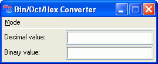
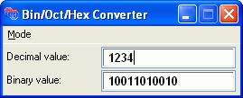

Creating an example application
As a demonstration on an implementation of a small, complete application using customized dialog windows in RapidBATCH, we will now write a number system converter. This small utility, let's call it the "Bin/Oct/Hex Converter", should be able to convert values from the decimal number system into the binary, the octal and the hexadecimal number system and backward.
To calculate the numbers of the different number systems, we use the functions "base_to_decimal" and "decimal_to_base", defined in the RapidBATCH function library MATH.RB, because the focal point of this chapter is not the conversion of values into different number systems, but the usage and handling of the dialog-widgets, how they are merged together to a complete software application.
First of all, however, I try to explain you the method of converting a decimal value into a binary value, to get you more involved in the purpose of our program. The decimal number system is the number system we daily use. It has 10 digits, (0,1,2,3,4,5,6,7,8,9), so we say, the decimal number system is hold to the base of 10. In contrast to this, there is the binary number system. The binary number system, that is used by every computer, has only two digits, 0 and 1, and is hold to the base of 2. We can store any number we have in decimal also in binary, but here, we need more digits to display one number. E.g. the decimal number "1234" is in binary "10011010010". The calculation of this value is very easy: The base value, 1234, needs to be divided by the base of the target number system each time, until the rest value is completely 0. If you get a rest-value with a decimal place, the digit in the binary number system will be a 1. If there is no decimal place in your rest-value, you set a 0. Perform these steps with the integer rest of your rest-number only, until you reach a value of 0. Then, the entire number is converted into a binary number. By reversing this resulting string of digits you received (because the binary number is established from right to left), you're getting the desired number in the binary number system.
The other number systems are calculated the same way, but with other bases. The octal number system is hold to the base of 8, the hexadecimal number system is hold to the base of 16, where the digits 10, 11, 12, 13, 14 and 15 are replaced by A, B, C, D, E and F.
Our converter program's user interface should now be made up as follows: A dialog-window with two input fields, where the upper one is to input and display the decimal number and the lower one is to input and display the value of the currently activated number system (binary, octal, hexadecimal). The target system should be changed over a menubar provided by the dialog, where the currently set conversion mode should be marked by a checkmark at the appropriate menu item. The conversion should be possible in both ways - that means when the user inputs a value in the decimal field, the value will be converted in the target number system or, when the user inputs a value (using the digits of the target system) into the target-system input field, it is converted into decimal. The conversion should be performed directly and "live" each time the user enters a digit in the particular input field.
All these requirements to the program we want to create are no problem for RapidBATCH. For an experienced programmer, such an application is developed and finished in less than 15 minutes and a script file length of only 120 lines (including all commentars and empty lines ;)).
As the first step in the development phase of this script we write a prototype. A prototype is a programmed and runable version of the user interface, but with no functionalities. Such a prototype is also a proven method to place and arrange the different widgets on the dialog window, making the user interface looking ergonomic and integrative.
rem PROTOTYPE: NO FUNCTIONALITY!!!
rem --- creating and setting up the main window ---
newdialog 'converter', 'dialog', '1|1|270|100'
rem set the dialog's title bar text and style
letdialog 'converter', 'caption', 'Bin/Oct/Hex Converter'
letdialog 'converter', 'style', 'single'
rem assign menu tree
[menu] = '&Mode:Decimal -> &Binary|Decimal -> &Octal|Decimal -> &Hexadecimal;;'
letdialog 'converter', 'menu', [menu]
rem --- creating input fields and labels ---
rem label and input-field for the decimal number
newdialog 'converter:l_decimal', 'label', '5|8|100|22'
letdialog 'converter:l_decimal', 'caption', 'Decimal value:'
newdialog 'converter:decimal', 'input', '110|4|150|25'
letdialog 'converter:decimal', 'font', 'Sans Serif|10|2'
rem label and input-field for the number in the target number system
newdialog 'converter:l_target', 'label', '5|34|100|22'
letdialog 'converter:l_target', 'caption', 'Binary value:'
newdialog 'converter:target', 'input', '110|30|150|25'
letdialog 'converter:target', 'font', 'Sans Serif|10|2'
rem --- making the dialog visible ---
letdialog 'converter', 'visible', [true]
rundialog [event] = '0'
end

The already running prototype of the converter.
So let's go step-by-step trough the prototype script.
First of all, we create a dialog basis window with a size of 270x100 pixels. In the following LETDIALOG-instructions we first set-up the dialog-title using the CAPTION-attribute, and then we set a so called dialog style using the STYLE-attribute. The "SINGLE"-style we are setting to the window in this case, changes the appeareance of the window insofar, that only a minimize-button and a close-button is available, because a maximize-button is not recommended to such a tiny application in this case. To get information on other style values, take a look to the RapidBATCH language reference.
Last but not least, we assign a menu to the dialog, using the MENU-attribute at LETDIALOG. To create a menu, RapidBATCH uses a so called "Menu-Descriptor", that describes the menu, the different items and levels. In this case, we create one menu-item "Mode" in the main menu bar, providing three selectable sub menu items ("Decimal -> Binary", "Decimal -> Octal" and "Decimal -> Hexadecimal"). For more informations on menu bar descriptors and their definition, take a look at the RapidBATCH language reference.
In the second part of the prototype script, we create four new widgets, in each case two input fields and two static text fields, displaying a description in front of the input-fields. By using the FONT-attribute at the followed LETDIALOG-instruction call, we set an alternative font type and size, here "Sans Serif, 10 Pixels, Bold" to each of the input-fields.
On the base of this prototype, we can now implement the functionalities to our script.
First of all, we import the RapidBATCH library MATH.RB, providing the conversion routines "decimal_to_base" and "base_to_decimal". Also, DIALOG.RB is imported, providing useful help functions for user defined dialog development, e.g. the "centerdialog"-procedure, centering a dialog on the screen. The import of these libraries is done as the first step in our script, using the INCLUDE-instruction.
rem --- importing library help functions ---
include 'math.rb'
include 'dialog.rb'
The functions decimal_to_base and base_to_decimal, provided by the MATH.RB library, do each expect, as the second parameter, a string containing all digits of the number system the value should be calculated to or from; The amount of these digits automatically defines the number system's base that should be used. To define the three number systems for binary, octal and hexadecimal, we declare three global variables, containing these digits for each of the number system. The fourth variable, [current_base], is used to store the digits of the currently used number system, and is needed later when we implement event handling procedures.
rem --- global variables (bases and digits of the number systems) ---
dec [bin], [oct], [hex], [current_base]
rem basis 2 (binary number system)
[bin] = '01'
rem basis 8 (octal number system)
[oct] = '01234567'
rem basis 16 (hexadecimal number system)
[hex] = '0123456789ABCDEF'
Before we implement the event handling now for the menu and the automatic "live" conversion of values, let's write two procedures, where each is reading out the corresponding input field, converts the value using the particular function to or from the currently set number system, and update this converted value in the corresponding text field. To keep up the simplicity, we call these two procedures "calc_target_value", converting the value of the decimal field to the currently set number system, and "calc_decimal_value", converting the number entered in the value field of the currently set number system to decimal again. In case of a calculation error (e.g. if a value contains invalid digits), both conversion functions base_to_decimal and decimal_to_base) return '-1'. In this case, we output the message "Error" in the particular conversion field, to let the user know that he entered a wrong digit or value.
rem --- implementation of the procedure "calc_target_value" ---
proc calc_target_value
dec [decimal], [convert]
rem calculate value in the target number system from the decimal value
getdialog [decimal] = 'converter:decimal', 'text'
if [decimal] ! ''
rem calculating the value
rem (using the decimal_to_base-library function)
decimal_to_base [target] = [decimal], [current_base]
if [target] = '-1' [target] = 'Error'
endif
rem set the calculated value to the target field
letdialog 'converter:target', 'text', [target]
endproc
rem --- implementation of the procedure "calc_decimal_value" ---
proc calc_decimal_value
dec [decimal], [target]
rem calculating the decimal value from the currently activated number system
getdialog [target] = 'converter:target', 'text'
if [target] ! ''
rem calculating the decimal value
rem (using the base_to_decimal-library function)
base_to_decimal [decimal] = [target], [current_base]
if [decimal] = '-1' [decimal] = 'Error'
endif
rem set the calculated value to the decimal field
letdialog 'converter:decimal', 'text', [decimal]
endproc
Before we now begin to write nearly the same event handling steps that need to be done when the number system should be changed for about three times, we simply implement another, third procedure performing these steps. This procedure, let's call it "set_number_system", expects as parameter one of the three number system definitions we created as global variables later, when we use it in the event handling for the menu. The first step set_number_system performs is to remove the checkmarks from all menu items (only one menu item really has one!).
Menu attributes can be accessed and changed by using the widget-labels in the format "Dialog-Label:Menu_Menu-Item-Text", that are automatically created by RapidBATCH when a menu-descriptor is assigned to a dialog-window. Please note, that these widget-labels that allow to access and change menu item attributes are only created to those items that are selectable in the menubar. Parenting menu-items, providing sub-menus, can't be selected or modified.
After the checkmark is removed from all items, it is set again to the particular menu item in the corresponding block of the IF-construction. Here, the static text in front of the input field of the target number system to be converted in, is also set to the particular number system name.
At the end of the procedure, we assign the variable [current_base], that we defined above, to the new number system definition to be used for the following conversions, and directly call calc_decimal_value to update the value to the just changed number system.
rem --- implementation of the procedure "set_number_system" ---
proc set_number_system: [number_system]
rem removing the checkmarks from the menu items
letdialog 'converter:Menu_Decimal -> &Octal', 'checked', [false]
letdialog 'converter:Menu_Decimal -> &Hexadecimal', 'checked', [false]
letdialog 'converter:Menu_Decimal -> &Binary', 'checked', [false]
rem updating the label in front of the target fields, check the
rem particular menu item again
if [number_system] = [bin]
letdialog 'converter:l_target', 'caption', 'Binary value:'
letdialog 'converter:Menu_Decimal -> &Binary', 'checked', [true]
elseif [number_system] = [oct]
letdialog 'converter:l_target', 'caption', 'Octal value:'
letdialog 'converter:Menu_Decimal -> &Octal', 'checked', [true]
elseif [number_system] = [hex]
letdialog 'converter:l_target', 'caption', 'Hexadecimal value:'
letdialog 'converter:Menu_Decimal -> &Hexadecimal', 'checked', [true]
endif
rem update the currently used base to the assigned value
[current_base] = [number_system]
rem recalculate the target value
calc_target_value
endproc
Now, our nice little application is nearly finished. The only thing that is missing now is an event handling routine.
For this, we first modify the section where we're creating the input fields for the values to a LETDIALOG call, switching the CHANGE-event for each input-field on. When the CHANGE-event is switched on, RUNDIALOG recognizes if anything in a text input-field is changed, e.g. when the user presses a key, so RUNDIALOG returns a corresponding event string. By default, the CHANGE event is turned of when a new widget with the INPUT-type is created. By using the value EVENT_<Event-Name> as attribute identifier, we can switch all events of a widget on or off (on = [true] or '0', off = [false] or '-1').
After creating the input- and label-widgets and switching on the events, we perform a call of set_number_system with the [bin] variable as parameter, to the script directly switches to the binary number system as default conversion mode when the converter starts.
rem --- creating input fields and labels ---
rem label and input-field for the decimal number
newdialog 'converter:l_decimal', 'label', '5|8|100|22'
letdialog 'converter:l_decimal', 'caption', 'Decimal value:'
newdialog 'converter:decimal', 'input', '110|4|150|25'
letdialog 'converter:decimal', 'font', 'Sans Serif|10|2'
letdialog 'converter:decimal', 'event_change', [true]
rem label and input-field for the number in the target number system
newdialog 'converter:l_target', 'label', '5|34|100|22'
newdialog 'converter:target', 'input', '110|30|150|25'
letdialog 'converter:target', 'font', 'Sans Serif|10|2'
letdialog 'converter:target', 'event_change', [true]
rem by default, use binary number system
set_number_system [bin]
For the sake of completeness, we center the dialog window on the screen, using the procedure "centerdialog" provided by the above imported DIALOG.RB library, and set the input-focus to the decimal input field and make the dialog window visible.
In the event handling routine, that we realize here again as in our first script with a customized dialog window using a REPEAT...UNTIL loop, the script performs a leading RUNDIALOG call waiting for events first, and then verifies the corresponding of the only six possible events, that can occur, using an IF...ELSEIF...ENDIF-construction. Because of our excellent implementation of the three procedures calc_target_value, calc_decimal_value and set_number_system, we just need to call them - in case of set_number_system with the particular number system as parameter - in each event.

The finished version of the Hex/Oct/Bin Converter.
Now, nothing more needs to be done, and our number system converter is finished:
rem ********************************************
rem ** Bin/Oct/Hex Converter **
rem ** Number systems conversation utility **
rem ********************************************
rem ** Copyright (C) 2005 by J.M. Meyer **
rem ********************************************
rem *************
rem ** GLOBALS **
rem *************
rem --- importing library help functions ---
include 'math.rb'
include 'dialog.rb'
rem --- global variables (bases and digits of the number systems) ---
dec [bin], [oct], [hex], [current_base]
rem basis 2 (binary number system)
[bin] = '01'
rem basis 8 (octal number system)
[oct] = '01234567'
rem basis 16 (hexadecimal number system)
[hex] = '0123456789ABCDEF'
rem *********************
rem ** IMPLEMENTATIONS **
rem *********************
rem --- implementation of the procedure "calc_target_value" ---
proc calc_target_value
dec [decimal], [convert]
rem calculate value in the target number system from the decimal value
getdialog [decimal] = 'converter:decimal', 'text'
if [decimal] ! ''
rem calculating the value
rem (using the decimal_to_base-library function)
decimal_to_base [target] = [decimal], [current_base]
if [target] = '-1' [target] = 'Error'
endif
rem set the calculated value to the target field
letdialog 'converter:target', 'text', [target]
endproc
rem --- implementation of the procedure "calc_decimal_value" ---
proc calc_decimal_value
dec [decimal], [target]
rem calculating the decimal value from the currently activated number system
getdialog [target] = 'converter:target', 'text'
if [target] ! ''
rem calculating the decimal value
rem (using the base_to_decimal-library function)
base_to_decimal [decimal] = [target], [current_base]
if [decimal] = '-1' [decimal] = 'Error'
endif
rem set the calculated value to the decimal field
letdialog 'converter:decimal', 'text', [decimal]
endproc
rem --- implementation of the procedure "set_number_system" ---
proc set_number_system: [number_system]
rem removing the checkmarks from the menu items
letdialog 'converter:Menu_Decimal -> &Octal', 'checked', [false]
letdialog 'converter:Menu_Decimal -> &Hexadecimal', 'checked', [false]
letdialog 'converter:Menu_Decimal -> &Binary', 'checked', [false]
rem updating the label in front of the target fields, check the
rem particular menu item again
if [number_system] = [bin]
letdialog 'converter:l_target', 'caption', 'Binary value:'
letdialog 'converter:Menu_Decimal -> &Binary', 'checked', [true]
elseif [number_system] = [oct]
letdialog 'converter:l_target', 'caption', 'Octal value:'
letdialog 'converter:Menu_Decimal -> &Octal', 'checked', [true]
elseif [number_system] = [hex]
letdialog 'converter:l_target', 'caption', 'Hexadecimal value:'
letdialog 'converter:Menu_Decimal -> &Hexadecimal', 'checked', [true]
endif
rem update the currently used base to the assigned value
[current_base] = [number_system]
rem recalculate the target value
calc_target_value
endproc
rem *****************
rem ** MAIN SCRIPT **
rem *****************
rem --- creating and setting up the main window ---
newdialog 'converter', 'dialog', '1|1|270|100'
rem set the dialog's title bar text and style
letdialog 'converter', 'caption', 'Bin/Oct/Hex Converter'
letdialog 'converter', 'style', 'single'
rem assign menu tree
[menu] = '&Mode:Decimal -> &Binary|Decimal -> &Octal|Decimal -> &Hexadecimal;;'
letdialog 'converter', 'menu', [menu]
rem --- creating input fields and labels ---
rem label and input-field for the decimal number
newdialog 'converter:l_decimal', 'label', '5|8|100|22'
letdialog 'converter:l_decimal', 'caption', 'Decimal value:'
newdialog 'converter:decimal', 'input', '110|4|150|25'
letdialog 'converter:decimal', 'font', 'Sans Serif|10|2'
letdialog 'converter:decimal', 'event_change', [true]
rem label and input-field for the number in the target number system
newdialog 'converter:l_target', 'label', '5|34|100|22'
newdialog 'converter:target', 'input', '110|30|150|25'
letdialog 'converter:target', 'font', 'Sans Serif|10|2'
letdialog 'converter:target', 'event_change', [true]
rem by default, use binary number system
set_number_system [bin]
rem --- centering the dialog on the screen and makeing it visible ---
centerdialog 'converter'
letdialog 'converter', 'visible', [true]
letdialog 'converter:decimal', 'focus', [true]
rem --- start the dialog event handling loop ---
repeat
rundialog [event] = '0'
if [event] = 'change_converter:decimal'
calc_target_value
elseif [event] = 'change_converter:target'
calc_decimal_value
elseif [event] = 'click_converter:Menu_Decimal -> &Binary'
set_number_system [bin]
elseif [event] = 'click_converter:Menu_Decimal -> &Octal'
set_number_system [oct]
elseif [event] = 'click_converter:Menu_Decimal -> &Hexadecimal'
set_number_system [hex]
endif
until [event] = 'close_converter'
end
Copyright © 2000-2006 by J.M.K S.F. Software Technologies, Jan Max Meyer
All rights reserved.